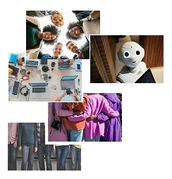

STARTPROjecten
STARTPROjecten: een initiatief om projecten op te starten die ondersteuning bieden aan Brusselse jongeren, vroegtijdige schoolverlaters, langdurige werklozen, NEET jongeren en werkzoekenden uit kansengroepen.

-
Inhoudelijke en zakelijke coördinatie
van
STARTPROjecten:
- STARTPROjecten neemt de coördinatie op zich van de acties op het vlak van informatica met INTEC BRUSSEL vzw en op het vlak van begeleiding van Brusselse jongeren, vroegtijdige schoolverlaters en werkzoekenden uit kansengroepen met de vzw InBrussel.
- STARTPROjecten verzekert de integratie en afstemming van de verschillende werkvormen (opleiding, sociale tewerkstelling, individuele trajectbegeleiding, groepsoriëntatie van jongeren naar stage en werk) binnen de verschillende deelwerkingen.
- STARTPROjecten werkt samen met onderwijs-, opleidings- en tewerkstellingspartners.
- STARTPROjecten werkt samen met andere initiatiefnemers in de sociale economie, en meer bepaald in de sectoren zorg, informatica, voeding/horeca, verkoop, bouw, vervoer en logistiek door middel van participatie in het opstellen van opleidingsplannen en competentieprofielen.